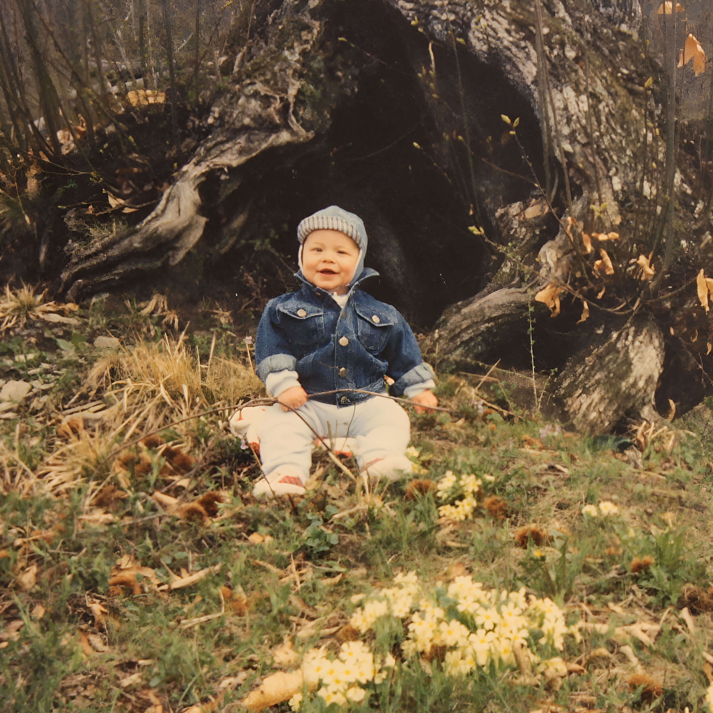
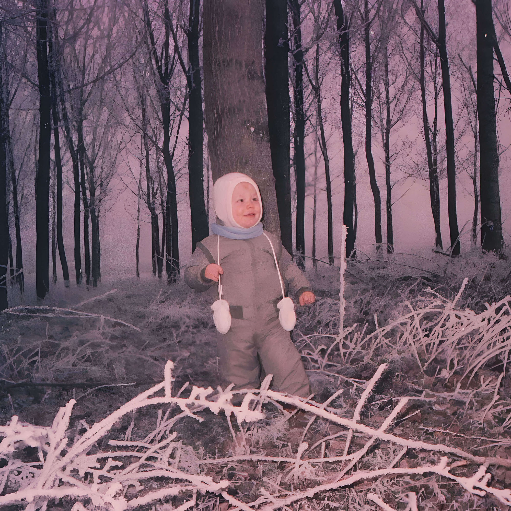
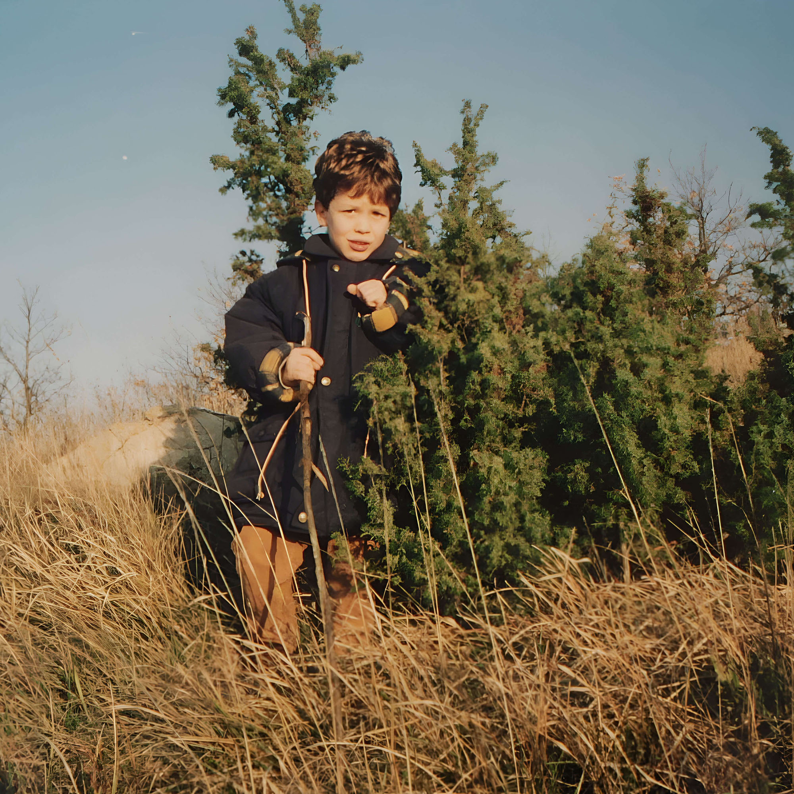
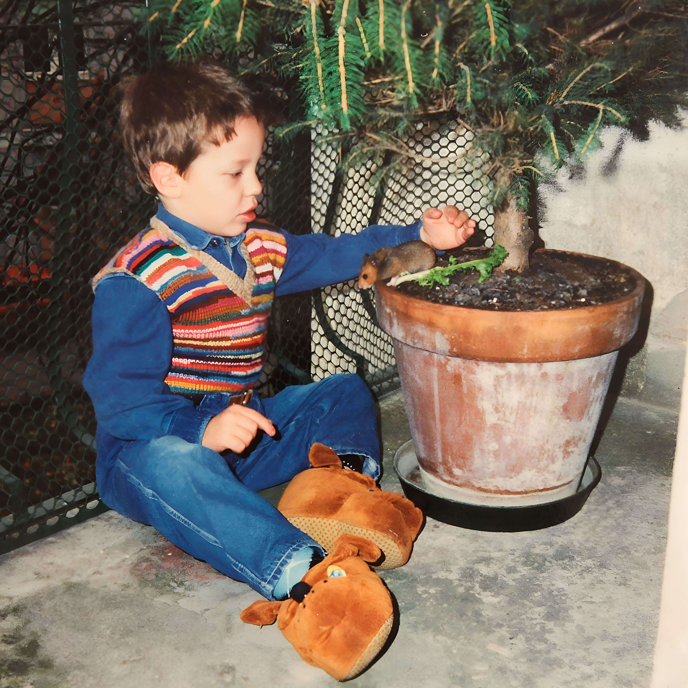
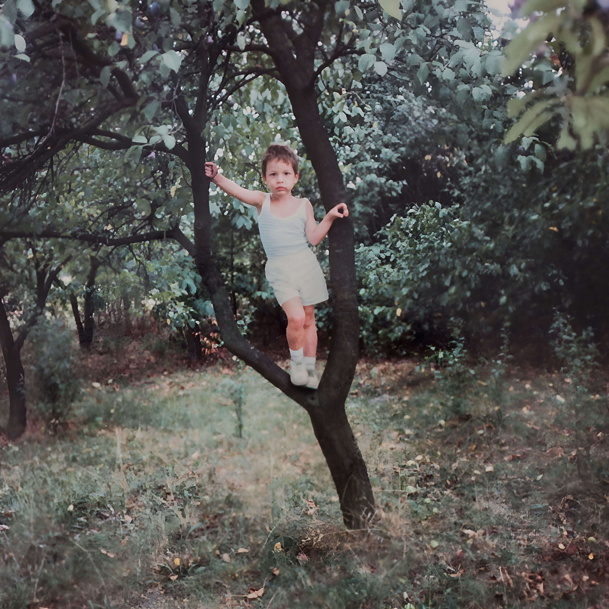
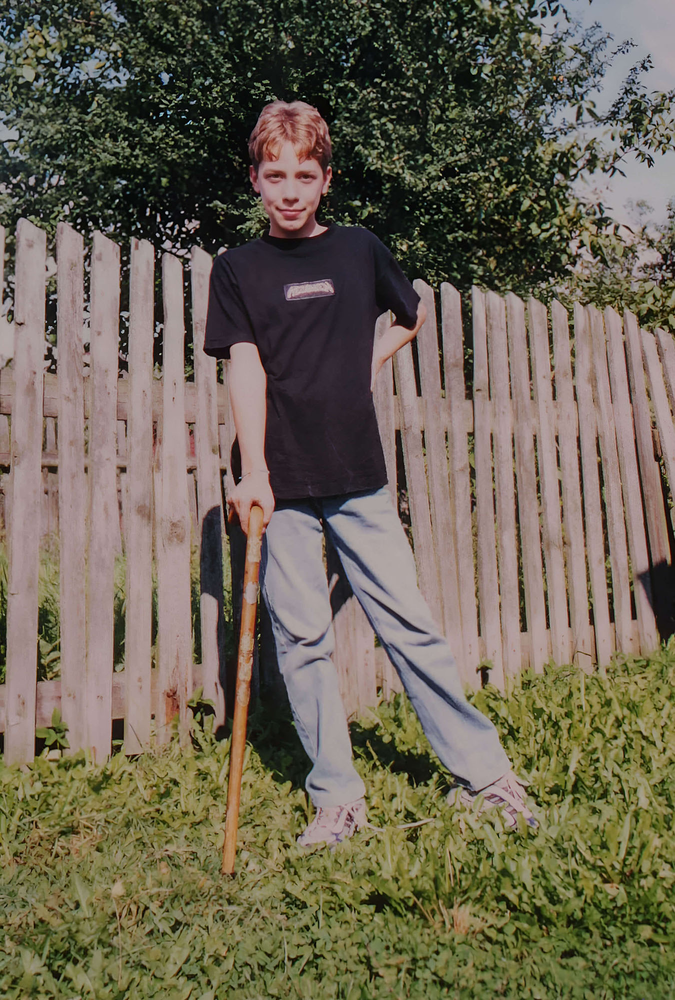
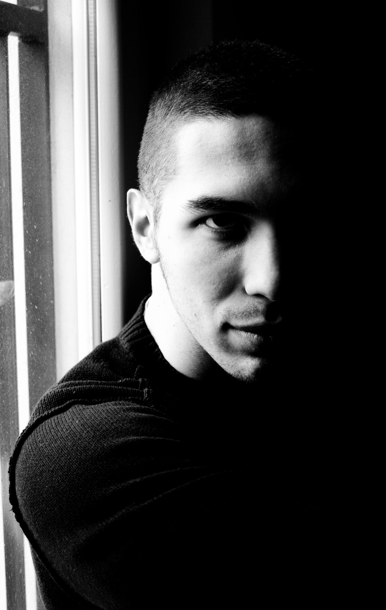
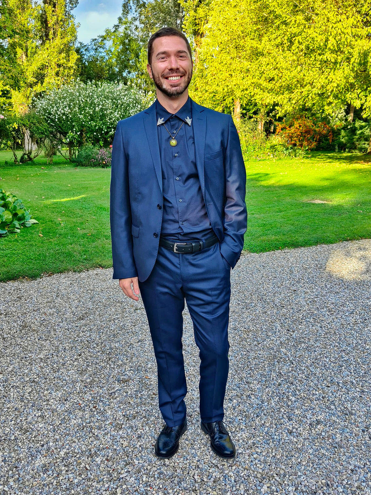

DIARIO PERSONALE
Sono nato in una piccola città della pianura padana, famosa per il niente, in un ormai lontano 1988. Fin da piccolo sono stato messo a stretto contatto con la natura e con il freddo: due elementi che, a quanto pare, avrebbero avuto un ruolo fondamentale nel mio futuro.

Io nel bosco

Io nel freddo

Io nel boschetto
Da bambino mi dilettavo come pilota di mezzi improbabili e ammaestratore di animali (abilità purtroppo andate perse). Ero già un grande estimatore del relax, del dolce far niente, dell’ozio creativo. Giocavo quando i giocattoli erano pochi e la fantasia faceva tutto il lavoro pesante.

Ammaestratore
Immerso nella natura, attingevo senza vergogna ai geni dei nostri antenati primati, arrampicandomi sugli alberi con una certa disinvoltura. Ebbi anche una breve carriera da agente segreto sotto copertura, conclusa con un rapido pensionamento: è un lavoro che ti consuma.

Arrampicatore

Pensionamento
Archiviata la vita spericolata, mi dedicai a lavori sedentari davanti a un computer. Fu una sorta di declino… non solo mentale, ma anche posturale. Imparai molte cose, ma ne persi altrettante. Il mio fisico divenne quello tipico di un lanciatore di coriandoli, o meglio di un sollevatore di polemiche.
Ho viaggiato quando ancora l’overtourism non esisteva (e si stava davvero bene). In netto contrasto con il periodo da nerd ci fu poi il lunghissimo periodo da tamarro: stile parecchio discutibile, ego forse un po’ troppo smisurato. Un capitolo di cui oggi mi vergogno leggermente… ma neanche troppo.

Capelli rossi

Biker Boy

25 Cent

Bello e impossibile
Poi arrivò la fase da modello. Le macchine fotografiche si evolvono, si passa da 2 a 20 megapixel, le foto smettono di essere sgranate e quindi… perché non farsi fotografare? In contemporanea feci crescere i capelli, per la prima di due volte nella mia vita. Ritengo ancora oggi che il capello lungo, per un uomo, sia quasi un passaggio obbligato: una fase di transizione necessaria.

Black & White
In quel periodo feci la combo definitiva: capelli lunghi e viaggio a New York. Un sogno che si avverava, vista la mia fissazione per l’America. Poco dopo raggiunsi la massima lunghezza e il record personale di tempo con i capelli lunghi, prima di impazzire definitivamente e tagliarli senza rimpianti.
Ci fu anche un lunghissimo periodo dedicato agli FPS online: da certe foto si capisce perfettamente quanto fossi in fissa.

New York

Capelli lunghi

Call of Duty
Se fino ai 18 anni la vita aveva un ritmo lento, da li in poi ha iniziato a correre fin troppo in fretta. In un attimo mi sono ritrovato adulto. Sì, ho viaggiato e fatto esperienze, ma a mio avviso mai abbastanza.
Non vado particolarmente fiero di quello che ero da ragazzino, ed è proprio per questo che ho intrapreso la strada della conoscenza e del miglioramento continuo. Ho iniziato a leggere di più, mi sono dedicato a nuovi hobby, ho viaggiato, sono diventato minimalista, ho imparato a pensare con la mia testa (cosa non cosi scontata) e continuo a imparare cose nuove.

Imprenditore
- Teo.